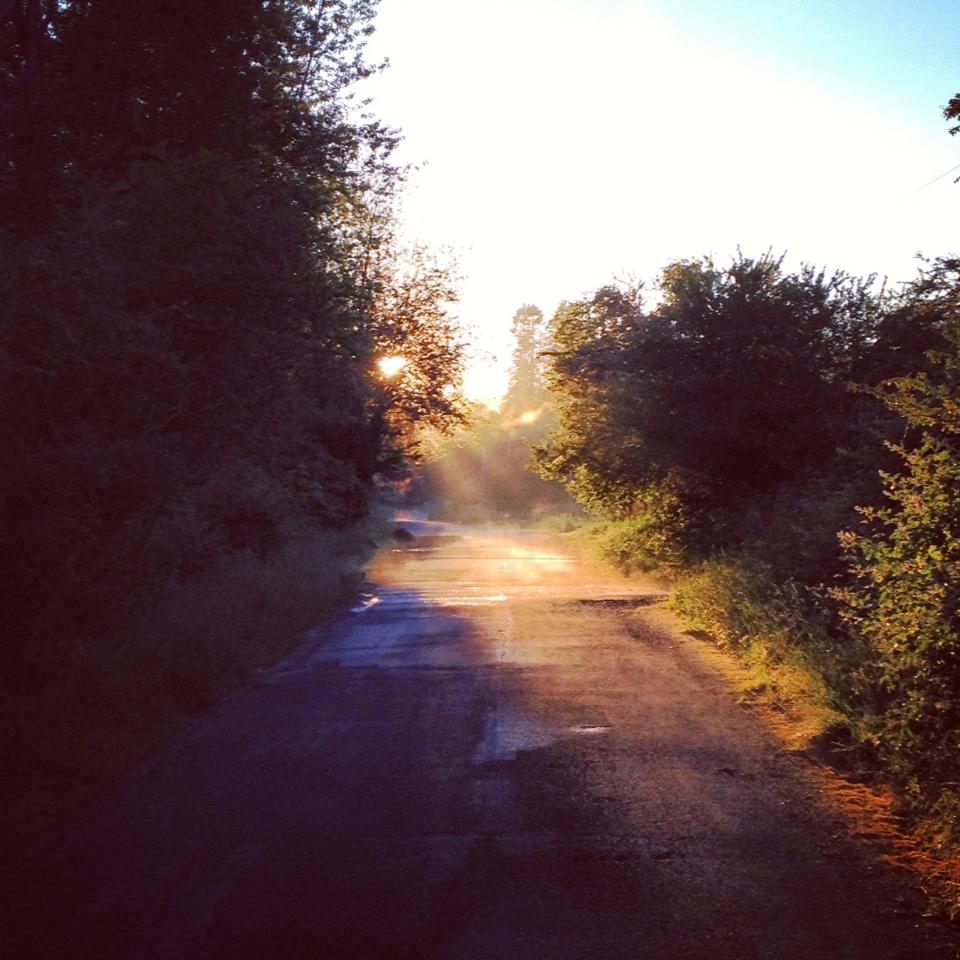

Where I grew up. I often think of how my childhood was, remembering playing outside with my siblings and my cousins. I remember when my grandpa built us a Go-kart, and how fun it was going so fast down the hill. When i often think of my childhood, I always think about playing outside and going on adventures. now that i am an adult, i do not get out as much as i would like. My sister asked me if I wanted to join her for a walk. “It doesn’t have to be long,” she said. “I just need to be outside.” And so we walked. We didn’t walk long; we didn’t walk far, but our walk was just enough to deliver what we needed: a touch of nature. Being immersed in nature allows us to feel calm and grounded. It’s like hitting a “reset” button, bringing us back to square one, whatever square one may be. I always find that there’s an incredible relaxation that comes from stepping foot into nature; a feeling of serenity that doesn’t seem able to be replicated by any other activity. Make time to step outside and walk through nature whenever you can. Let your mind wander along with your body, but make a point to pay attention to whatever pieces of life you may come across. Study the shape of a leaf or the sound of a gust of wind. Be silent and let yourself be calmed and freed by the Earth beneath your feet.
